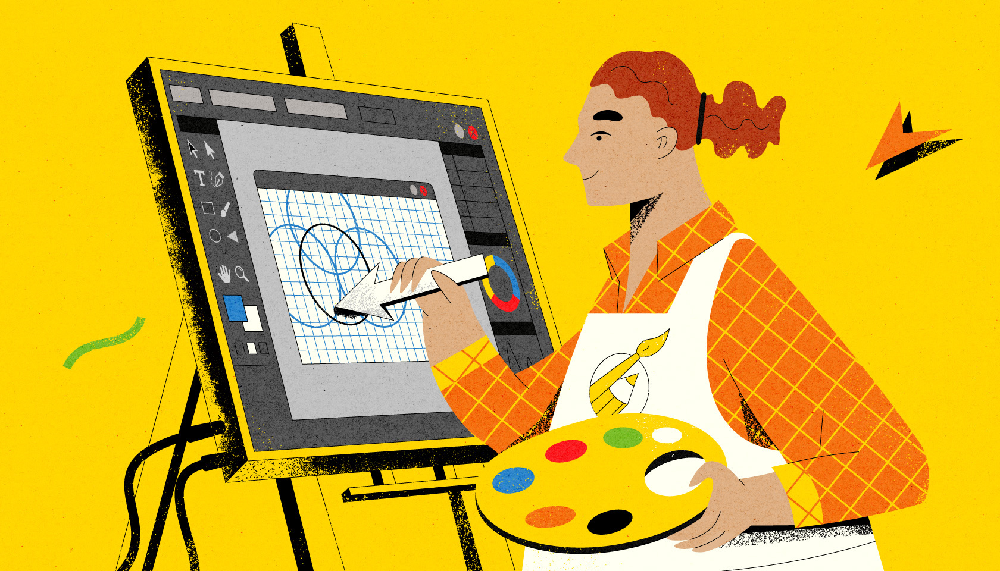

Buscar la respuesta a la pregunta estrella «qué es diseño gráfico» no es fácil. Se trata de una amplia disciplina que interactúa con muchas otras y que, a su vez,
funciona de manera autónoma.
Podría resumirse la tarea principal de este ámbito como todo aquello que permite dar a conocer y publicitar productos, servicios y marcas. Sin embargo si sigues
preguntándote qué es diseño gráfico y qué no, podemos incluso profundizar un poco más en ello.
Diseño gráfico es todo aquello que comunica un mensaje visual. Así, su máxima es obtener manifestaciones o mensajes gráficos.Su auge actual se debe a la gran expansión
de todo tipo de mensajes visuales a través de nuestros diversos dispositivos digitales y tecnológicos.
Esta disciplina se sirve de imágenes, vídeos y elementos textuales, todos ellos elementos imprescindibles para la comunicación gráfica y visual. Es, a partir de ellos,
como el diseño gráfico consigue trasmitir los mensajes e ideas necesarias.
Por ello, la respuesta a «para qué sirve el diseño gráfico» es simple. Es el ámbito que permite a las empresas plasmar sus ideas, mensajes y productos. O dicho de otra
manera, es la disciplina que permite transmitir la identidad corporativa de una marca o de un producto.
Podríamos decir entonces que una de las disciplinas con las que más relación tiene es con la de la comunicación corporativa. Un ámbito que se sirve del diseño y los
diseñadores gráficos, en parte también, comunicadores. Lo mismo ocurre en el ámbito de marketing. El diseño gráfico se encarga de plasmar en muchos soportes ideas y
mensajes en muchos soportes. Ocurre en el packaging de productos, en las webs corporativas o en los carteles comerciales. ¡Casi todo cuenta con el apoyo del diseño
gráfico!